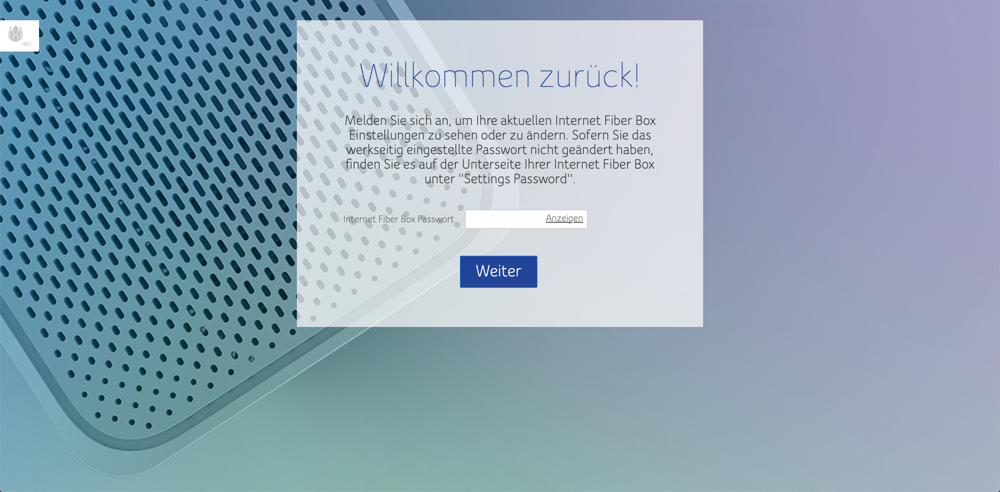

Hallo,
ich habe vor kurzem ein Magenta-Internetpaket abgeschlossen dass mit einer FiberBox 2 kam. Ich wollte auf die Einstellungsseite des Teils gehen um u.a. mein WLAN umzubennen und ein paar Port-forwardings zu konfigurieren - nichts abenteuerliches.
Aber hier kommt das Seltsame: Die Einstellungsseite sieht manchmal anders aus. Meist werde ich erstmal nach der Sprache gefragt:
Doch wenn ich diese Seite sehe, weiß ich schon das etwas nicht stimmt, denn das Settings-Passwort, dass auf der nächsten Seite einzugeben ist, stimmt nie. Ja, ich gebe garantiert das richtige "Settings Passwort" ein, nicht das WLAN-Passwort - ich habe schon mehrmals mit dem Support telefoniert.
Manchmal, ja wirklich nur manchmal sieht die Seite aber anders aus. Ich werde gar nicht mehr nach der Sprache gefragt, sondern bekomme direkt folgenden Screen präsentiert:
Und hier klappt die Anmeldung wunderbar! Ich konnte schon einige Einstellungen machen, aber leider ist es nur eine Frage der Zeit, bis ich nach einem Refresh wieder die andere Seite sehe, wieder die Sprache auswählen muss und unmöglich wieder auf das Admin-Interface komme...
Ich habe das alles bereits dem Support geschildert und der hat einen Modemtausch veranlasst. Nur leider zeigt die neue FiberBox 2 die mir zugeschickt wurde DAS EXAKT GLEICHE FEHLERMUSTER.
Im Support kann mir leider auch keiner helfen, die Leute am Telefon sind zwar nett aber leider merke ich dass ich mich selber besser auskenne wie die Telefonisten, die mir die immer gleichen Fragen stellen und mit mir gemeinsam den vierzigsten Factory-Reset zusammen durchgehen (bis jetzt hat noch kein einziger was gebracht).
Ich kann mir nicht vorstellen, dass ich der einzige mit diesem Problem bin - hier ein anderer Beitrag aus dem Forum wo der User denke ich genau dasselbe Problem hat: 6601-upc-connect-box-erstinstallation-funktioniert-nicht/
Hat sonst noch irgendwer genau dasselbe Problem? Bitte um Hilfe, bin hier etwas am verzweifeln...
Noch etwas: Sollten die diversen Einstellungsseiten wirklich so aussehen? Bei mir ist alles immer noch UPC gebrandet, und UPC ist ja schon länger Geschichte...
Bearbeitet von romande
Ich hatte dasselbe Phänomen anfangs. Nach ein paar factory resets der Box hat sich das aber gegeben.
Ich hab genau dasselbe Problem. Die Seite ist auch UPC gebrandet. Der Techniker war schon da. Hat die Dose und den Router ausgetauscht. Ohne Erfolg. Ich bin nun seit einer Woche damit beschäftigt. Seit der Router ausgetauscht wurde immer wieder Verbindungsabbrüche. Bisher hat Magenta noch keine Lösung für unser Problem gebracht.
Hallo @Schatz ,
In diesem Thread geht es nicht um Verbindungsabbrüche, sondern um die Modemoberfläche und den Zugriff darauf. Wenn du nach wie vor Einschränkungen beim Internet hast, versuche mal die Verbindung zu optimieren. Hilfreiche Tipps findest du hier . Falls das nicht hilft, wende dich nochmals direkt ans Technikteam unter 0676 200 7777. Liebe Grüße, Jonathan
vor 5 Stunden schrieb Schatz:Ich hab genau dasselbe Problem. Die Seite ist auch UPC gebrandet. Der Techniker war schon da. Hat die Dose und den Router ausgetauscht. Ohne Erfolg. Ich bin nun seit einer Woche damit beschäftigt. Seit der Router ausgetauscht wurde immer wieder Verbindungsabbrüche. Bisher hat Magenta noch keine Lösung für unser Problem gebracht.
Ja, genau das war mein ursprüngliches Problem. Bei mir ging das ganze 3 Wochen lang. Es hat einen Routertausch benötigt, das hat genau garnichts gebracht, die Probleme waren genau gleich. Nach 2 Wochen kamen auch noch heftige Verbindungsabbrüche hinzu.
Nachdem mir daraufhin endlich ein Technikertermin zugestanden wurde, hats am nächsten Tag (noch vor dem Termin) plötzlich funktioniert.
Seitdem läuft alles einwandfrei, ich konnte mich plötzlich einloggen, alles einstellen, die Verbindungsabbrüche waren auch Geschichte.
FYI: Die Einstellungsseite ist immer noch UPC-gebrandet (siehe Anhang)  . Aber sie funktioniert jetzt.
Bearbeitet von romandeKlingt für mich als ob alles in Ordnung ist, nach der Sprache wird jedesmal nach einem Reset und bei der Ersteinrichtung gefragt, dann muss man das Passwort das auf der Hinterseite vom Gerät aufgeklebt ist eingeben und im nächsten Schritt ein neues Passwort auswählen. Danach ist also das Passwort auf der Hinterseite nicht mehr richtig, bis zum nächsten Reset dann muss man für die Ersteinrichtung wieder das auf der Hinterseite verwenden.
Ich habe ich die UPC Connect Box und die ist auch UPC-gebrandet, ich weiß gar nicht ob es für diese Geräte überhaupt je Firmware Updates gab, es sind ja ganz billige generische - ich glaube von Technicolor - die andere Unternehmen um Cents kaufen und ihren Namen draufdrucken lassen, oder ob es aus konstruktionstechnischen Gründen nicht möglich. Die Weboberfläche ist ja auf dem Gerät selbst.
vor 9 Minuten schrieb audiopathik:Klingt für mich als ob alles in Ordnung ist, nach der Sprache wird jedesmal nach einem Reset und bei der Ersteinrichtung gefragt, dann muss man das Passwort das auf der Hinterseite vom Gerät aufgeklebt ist eingeben und im nächsten Schritt ein neues Passwort auswählen. Danach ist also das Passwort auf der Hinterseite nicht mehr richtig, bis zum nächsten Reset dann muss man für die Ersteinrichtung wieder das auf der Hinterseite verwenden.
Ja, das ist mir klar. Das es jetzt funktioniert ist allerdings erst seit kurzem der Fall. Zuvor funktionierte auch nach Reset das auf der Rückseite aufgeklebte Passwort nicht. Außerdem sah das interface leicht anders aus (siehe Screenshots im Original-Post).
Ich bin nur froh, dass es jetzt funktioniert - trotzdem eine Frechheit, dass es 3 Wochen gedauert hat bis sich das Problem auf *magische* Weise von selbst gelöst hat.
Am 27.4.2021 um 14:20 schrieb romande:
Ja, genau das war mein ursprüngliches Problem. Bei mir ging das ganze 3 Wochen lang. Es hat einen Routertausch benötigt, das hat genau garnichts gebracht, die Probleme waren genau gleich. Nach 2 Wochen kamen auch noch heftige Verbindungsabbrüche hinzu.
Nachdem mir daraufhin endlich ein Technikertermin zugestanden wurde, hats am nächsten Tag (noch vor dem Termin) plötzlich funktioniert.
Seitdem läuft alles einwandfrei, ich konnte mich plötzlich einloggen, alles einstellen, die Verbindungsabbrüche waren auch Geschichte.
FYI: Die Einstellungsseite ist immer noch UPC-gebrandet (siehe Anhang) . Aber sie funktioniert jetzt.
Schön dass es bei dir wieder funktioniert. Und danke für das Feedback. Bei mir ist zumindest die Einstellungsseite des Routers wieder erreichbar nachdem die Hotline meinen Router zurück gesetzt hat und diverse Einstellungen geändert hat. Die Netzabbrüche sind immer noch da. Ich werd wohl noch öfter die Hotline belästigen ☹️
{kind=link}
{kind=link}
{kind=link}
{kind=link}